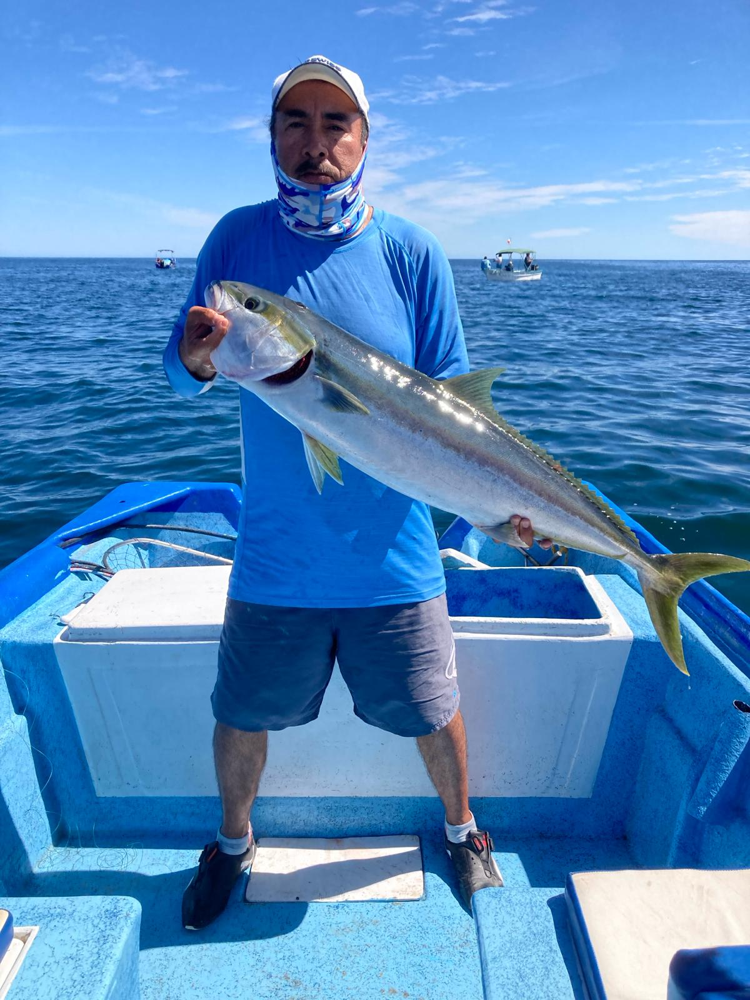
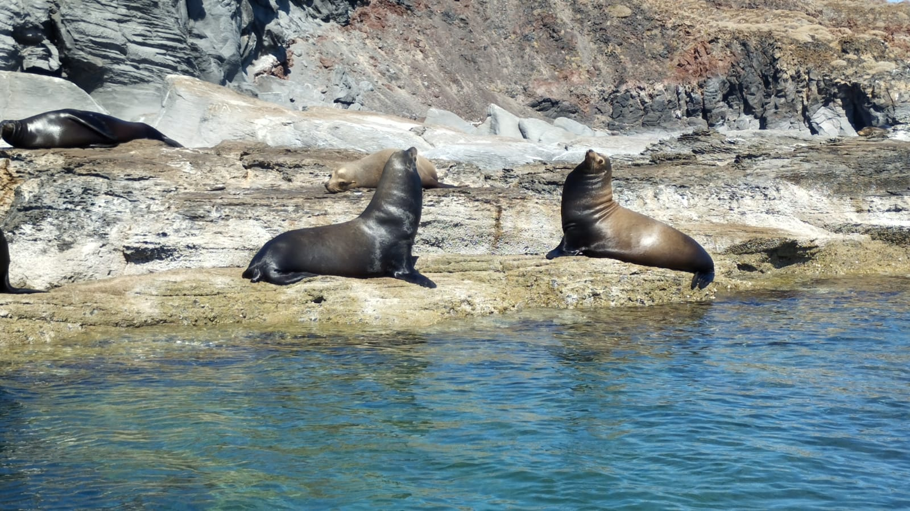
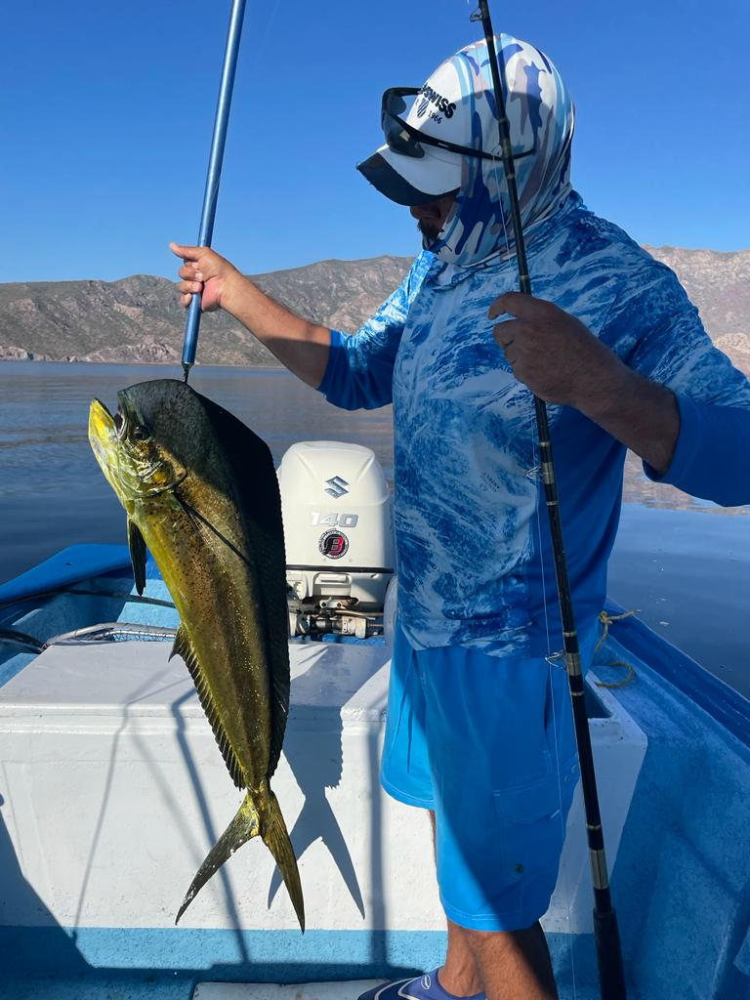

En Murlop´s tours te ofrecemos algunos servicios ya sea de pesca, paseo y avistamiento de especies marinas
  
De igual manera, ofrecemos el servicio de tour al poblado de san javier y sus alrrededores.
En este lugar podemos visitar la mision de san javier, la cual cuenta con mucha historia y es una de la primeras misiones fundadas en Baja Caqlifornia Sur.
El poblado de san javier cuenta con un huerto al que tenemos acceso para conocer las diversidad de árboles frutales que ahi se encuentran, con el cual se elaboran diferenter productos artesanales tales como el dulce de mango y el vino artesanal de San Javier.